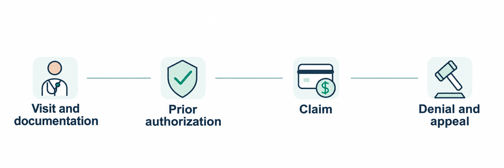

Prioritize accuracy
92.7%correct
18% of cases auto-decided
Accuracy among automatically decided appeals.
RevGuard gives billing teams more capacity across reimbursement.

01 / 12 · Evidence missing
Keeping up requires checking both the current policy and the evidence in each case.
Agreement with independent reviewers on whether to overturn a denial.
92.7%correct
18% of cases auto-decided
Accuracy among automatically decided appeals.
52%auto-decided
83% correct on those decisions
Remaining cases go to review at either setting.
Two automation settings · Appeals research evaluation · Five-run averages
A 64-year-old man’s 12-week hepatitis C treatment had been denied
Your team sets the limits for automation.